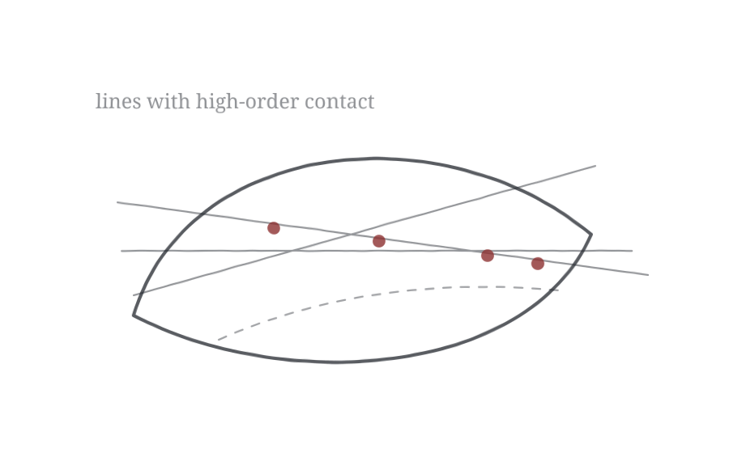

Lines highly tangent to a hypersurface

Table of Contents
- Section 1: Introduction
- Section 2: Deformations of lines with fixed contact order
- Section 3: Fifth order tangent lines
- Section 4: Intersection Theory computation
- Bibliography
Tags
| Tag | Type | Number |
|---|---|---|
| A8C8 | Theorem | 1.1 |
| 7289 | Theorem | 1.2 |
| 87ED | Definition | 2.1 |
| CB7D | Lemma | 2.2 |
| 2967 | Definition | 2.3 |
| 92B0 | Corollary | 2.4 |
| FCFD | Proof | |
| 2E97 | Definition | 2.5 |
| 5683 | Definition | 2.6 |
| 626C | Definition | 2.7 |
| C703 | Theorem | 2.8 |
| 7A8C | Proof | |
| F775 | Proof of Theorem 1.1 [A8C8] | |
| B72D | Theorem | 3.1 |
| 3640 | Proposition | 3.2 |
| AD1E | Proof | |
| 2769 | Corollary | 3.3 |
| 396B | Proof | |
| 5D83 | Theorem | 3.4 |
| A40A | Definition | 3.5 |
| 3736 | Definition | 3.6 |
| B044 | Proposition | 3.7 |
| 4FAE | Proof | |
| 81FA | Theorem | 3.8 |
| F56F | Proof | |
| 4C26 | Lemma | 3.9 |
| F61B | Proof | |
| 3BAB | Lemma | 3.10 |
| 84D8 | Proof | |
| 0122 | Theorem | 4.1 |
| 1742 | Proof | |
| 9DB9 | Remark | 4.2 |